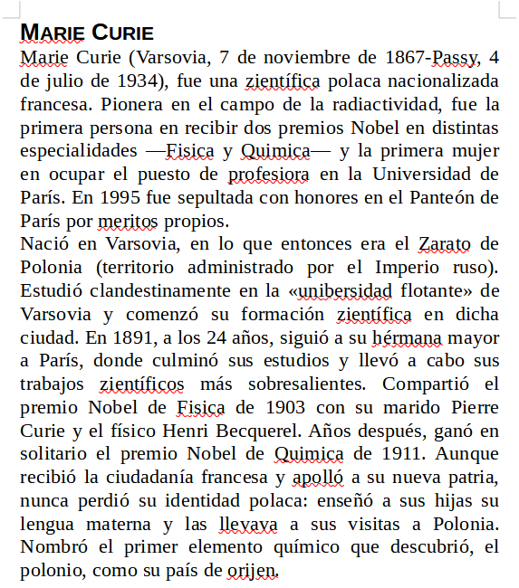
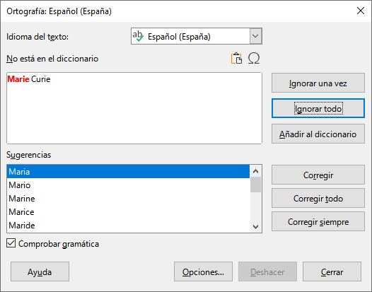
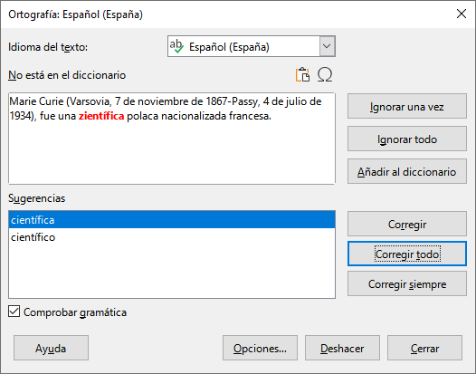
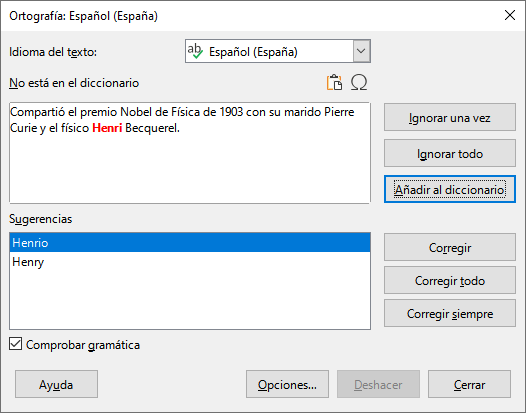
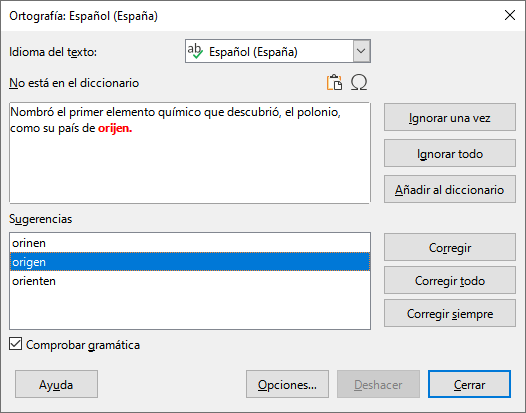
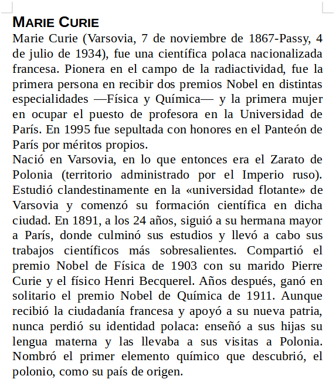

14. Correcció d’ortografia¶
En aquest exercici, veurem les eines de correcció automàtica de l’ortografia del text que ens ajudaran a detectar i corregir les falles d’ortografia.
; BR |
Primer descarreguem i obrim amb LibreOffice Writer el document d’exemple.
: Descarregueu: `Exercici d’ortografia. <Escriptor/escriptor-ortografia.odt> '
; BR |
En obrir el fitxer anterior, trobarem la següent finestra a LibreOffice Writer.

; BR |
Al text podem veure moltes faltes d’ortografia indicades amb línies subratllades vermelles sota cada paraula incorrecta. També hi ha paraules que s’escriuen correctament, però en un altre idioma, de manera que s’assenyalen en vermell (Marie, Passy, Zaato, Henri) per no estar al diccionari espanyol.
Per poder veure les paraules incorrectes amb el vermell subratllat a cadascun, cal ** activar l’opció ** que es troba a les `` eines ... Revisió ortogràfica automàtica.
; BR |
Per corregir les faltes automàticament, utilitzarem l’eina de menú `` eines ... ortografia ... `` `o fent clic a la tecla de funció F7.
Apareixerà una finestra de control d’ortografia. En paraules de noms adequats com ** Marie ** Premeu el botó ** tot **.

; BR |
En paraules mal escrites, com ara ** zientific **, hem de fer clic a un dels suggeriments que hi ha a sota (en aquest cas serà ** científic **) i feu clic al botó ** per corregir -ho tot **.

; BR |
En les paraules que sabem que estan ben escrits, també els podem afegir al diccionari de manera que el dissimulador els interpretés com a paraules correctes.

; BR |
A la darrera paraula mal escrita (** orijen ) apareix un primer suggeriment que no és correcte ( orinen ). El suggeriment correcte ( Origen **) i feu clic a ** Corregiu tot ** caldrà assenyalar.

; BR |
Un cop corregides totes les falles d’ortografia, el text es pot veure sense línies subratllades vermelles en falles d’ortografia.

Crèdits¶
El text que s’utilitza en aquest exercici es basa, amb canvis, a l’article de Wikipedia sobre Marie Curie <https://es.wikipedia.org/wiki/marie_curie> __, a llicència cc by-sa 3.0 <https://creativecommons.org/licenses/by-sa/3.0/> `` `` `` `` `` `` `` `` `` `` ` `` `` `` `` '